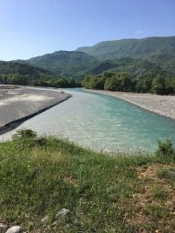
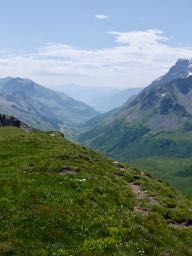

Ecosystem function in fluvial meta-ecosystems
Ecosystem structure and function is significantly influenced by movement. Nutrients and other inorganic material move via passive transport, while organisms can be either passively or actively dispersed. It is also likely that gradients in community structure infleuence ecosystem function, such as primary production, ecosystem respiration, and nutrient fluxes. Thus, understanding how the physical structure of rivers facilitates movement of material and organisms, and how this in turn influences community composition and food web structure, is likely to give important insights into ecosystem function across entire river networks.
I am working in several river networks in Europe, including the Vjosa (pictured here) to measure gross primary production and ecosystem respiration as a metric of ecosystem functioning. The goal is to build a model for ecosystem function for the entire catchment parametrised from these measurements, and to then link EF to biodiversity at multiple trophic levels.
Predicting biodiversity at large spatial scales
Global environmental change is likely to produce significant shifts in species distributions. Because species differ in their dispersal abilities and their fundamental niches, communities are unlikely to move as a unit, resulting in novel communities that will assemble gradually as the environment changes. My work at the LECA in France has focused on improving methods to model diversity and predict changes into the future, and on how to incorporate additional information beyond species (such as phylogeny, functional traits, and trophic networks) into diversity models. Much of this work has been conducted with alpine grasslands, where steep environmental grandients and human land use combine to produce rapid spatial turnover in biodiversity.
Modeling species range dynamics in response to climate change
Climate change is the most obvious forcing mechanism that may change ranges in the future, and current methods (including species distribution models, SDMs, and dynamic global vegetation models, DGVMs, among others) have a number of drawbacks. Using a long-term dataset of permanent forest plots from North America, we have developed a semi-mechanistic distribution model that uses metapopulation theory as the foundation to predict species distribution. A strength of this approach is that can predict both transient and equlibrium states (unlike typical SDMs, which assume equilibrium with climate), and transient predictions naturally incorporate limitations on the rate of spread.